← 返回阅读库 · 原论文目录
论文讲解阅读文档 · 表征学习 · v197
Long Short View Feature Decomposition via Contrastive Video Representation Learning
视频时长 00:06:08；讲解文字 3,146 字符；提取讲解画面 29 张。按视频原顺序阅读，每段文字保留时间戳。
文字来自整段视频的自动语音转写，按自然停顿分段，并与 PPT / 论文页面 / 演示画面对齐。未将讲解压缩为摘要；术语、数字和口述公式请结合画面及原论文核对。 阅读稿已校正规范部分明确术语误识别；原始逐字稿和每处修改记录另行保留。
讲解画面为源视频截图（640×360），不是可编辑 PPT 文件。全片按每秒 2 帧扫描内容变化，逐步展开页保留；连续动画保留代表画面。清晰度受源视频限制。
下载完整资料包 · 含离线 HTML、PDF、Word、全部 PPT 画面和字幕。
原论文与材料
Long Short View Feature Decomposition via Contrastive Video Representation Learning · 下载完整 PDF（12 页）
按时间阅读
00:00:00–00:00:19 · 画面 001
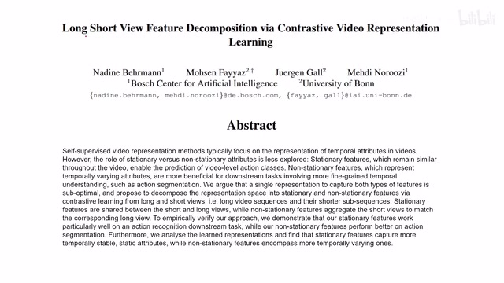
00:00:00–00:00:19 · 画面 001大家好啊，今天我们来快速介绍一个工作，Long Short View Feature Decomposition via Contrastive Video Representation Learning。那这个工作呢，主要是我们在这个 Contrastive Learning 放在我们这个 Video Representation Learning 里面，看能有整出什么新花样来哎。特别是这个 Long Short View 到底是什么意思呢？那我们来看到这里，这里是作者给出了一个示意。那本文内推设呢，其实非常简单，就是首先呢，我们会把一个视频定义成这个 Long View。
00:00:19–00:00:40 · 画面 002
00:00:19–00:00:40 · 画面 002然后它其中一个片段，我们把它定成 shortviews。比如说这里我们有一个视频，就是一个酒保在酒吧前面，他在调酒。那么整个这个视频一整个，我们叫它一个 long view。
00:00:40–00:00:41 · 画面 003
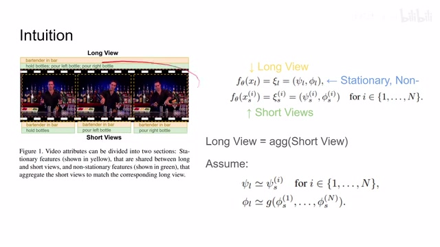
00:00:40–00:00:41 · 画面 00300:00:41–00:01:17 · 画面 004
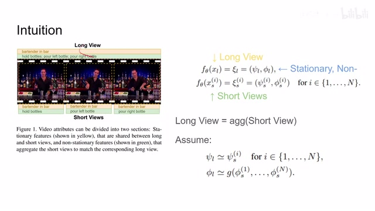
00:00:41–00:01:17 · 画面 004那里面的每一个小片段呢，比如说啊，这里拿着这个瓶子到这个左边的瓶子到右边的瓶子对吧？这一个小片段，我们呢就可以把它分割成一个个 short views。那这一个 short views 呢，是当然实际你在划分的时候呢，不一定每个 short views 都有相应的这个 label，就是不一定每一个 short views 的片段都是有意义的，但是我们依然把它分成了这么多 short views。那为什么要这么干呢？这里又要引入作者的第二个设想。
就是它希望我们的 feature 可以做 decomposition，也就是说把我们的 feature 给它分解开来，或者叫 disentanglement。那这里呢，我们可以看到我们把一个无论是长的这个 view 或者是短的这个 view 送到相同的这个 encoder 里面，那得到一个 representation。这个 representation 呢，其实可以拆成两块，一块呢是这个静止的 representation 这个 set。
00:01:17–00:01:18 · 画面 005
00:01:17–00:01:18 · 画面 00500:01:18–00:01:57 · 画面 006
00:01:18–00:01:57 · 画面 006那一块呢是这个非静止的 representation 这个 fi。那还是以这个为例子，假如说我们把这个视频送到我们的 coder 里面，那么非常理想的情况下，然后这些背景因为他们一直都没动嘛，所以呢，他们就应该走到这个静止的这个 feature 里面，用它来去保留那这些运动的这个 feature 呢对吧？那么比如说这个人的这个各种动作，它呢就应该在这个 fi 里面得到保留。
00:01:57–00:02:05 · 画面 007
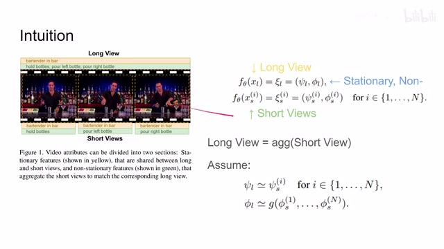
00:01:57–00:02:05 · 画面 007同样也是我们把 short views 也放到这个 encode 里面，我们希望能得到这两种 representation。那么下面一个很显然的问题就是，我们怎么样去让我们这个模型把 stationary 和非 stationary 的 feature 给它分开，或者说我们该怎么样构建这个 loss。这里作者做了以下假设，首先对于静止不动的 feature 来说。
00:02:05–00:02:46 · 画面 008
00:02:05–00:02:46 · 画面 008那无论你是长的这个 view 一整个视频还是短的就有 video clips，那都是一个视频嘛，所以静止不动的东西它就应该是静止不动的。所以可以看到呢，这里它假设我们无论是从哪一个 shortviews 出来的这个 stationary 的这个 feature 都应该跟这个 longview 的这个 stationary feature 它们应该是尽量接近的，因为我们就希望它是在整个这段过程中保持不变的 feature。而那对于这些非静止的 feature 就是其他这些 feature 呢，我们应该怎么处理呢？
00:02:46–00:02:47 · 画面 009
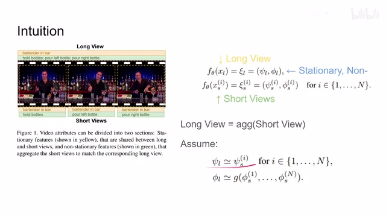
00:02:46–00:02:47 · 画面 00900:02:47–00:02:50 · 画面 010
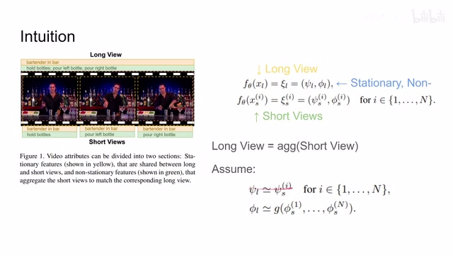
00:02:47–00:02:50 · 画面 01000:02:50–00:02:52 · 画面 011
00:02:50–00:02:52 · 画面 01100:02:52–00:02:58 · 画面 012
00:02:52–00:02:58 · 画面 012这里我们想，因为我们的 shortview 都是从这个 longview 里出来的，或者说我们就是因为一个个 shortview 给它拼接起来才得到一个 longview，所以我们如果有一种方法把这个 shortview 的这些非静止的这些 feature 给它做 aggregation，那么理论上我们就应该能够构建出整个 longview 的这个 feature 的 aggregation。这是作者的一个好的构想，或者说是叫它一个 intuition。那么因此我们可以看到在这里。
00:02:58–00:03:19 · 画面 013
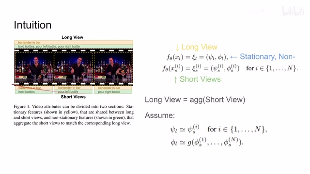
00:02:58–00:03:19 · 画面 01300:03:19–00:03:37 · 画面 014
00:03:19–00:03:37 · 画面 014看到这个 G 是一个 aggregation,它可以是求和,可以是 MLP,可以是 GRU 等等,这些作者在后面的结果中都有了讨论,我们想它就是一个把很多个这样的 feature,这个非静止的 feature 给它集合在一起,然后构成一个 feature,这个 feature 应该跟我们这个 long view 提出来的这个非静止的 feature 应该尽量的接近,那么这两个就是本文提出的最核心的构想,那么现在有了这两个构想,我们就可以做 contrastive learning 了,毕竟这个约束已经打好了,
00:03:37–00:03:38 · 画面 015
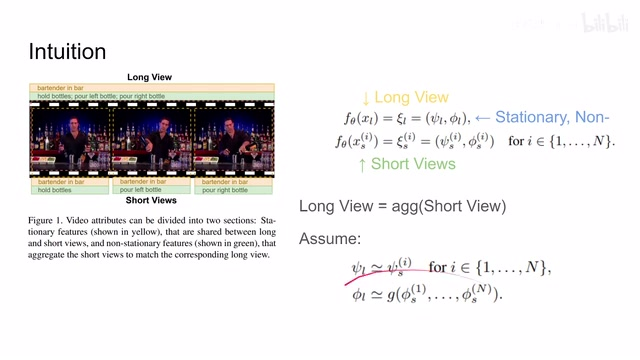
00:03:37–00:03:38 · 画面 01500:03:38–00:03:45 · 画面 016
00:03:38–00:03:45 · 画面 01600:03:45–00:03:47 · 画面 017
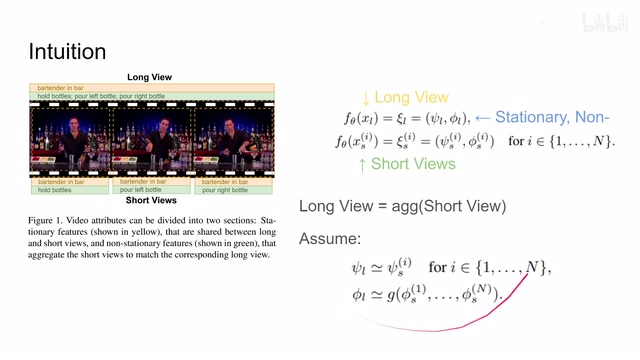
00:03:45–00:03:47 · 画面 01700:03:47–00:03:55 · 画面 018
00:03:47–00:03:55 · 画面 01800:03:55–00:04:10 · 画面 019
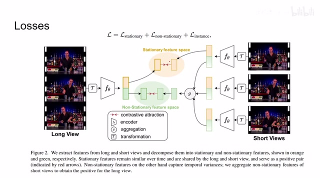
00:03:55–00:04:10 · 画面 019那很自然而然的对于这个静止的 feature 呢我们有一个 loss 非静止的 feature 呢也有一个 loss 那最后呢还有一个 instance 的这个 loss 那当然就是我们每个 sample 之间它们都是各自不同的所以要有一个 contrastive loss 那具体来看我们的这个表达式那我们的静止的 loss 这个 info nce
00:04:10–00:04:44 · 画面 020
00:04:10–00:04:44 · 画面 020对吧它的这个 similarity 就是这个 cosine similarity 两个 representation 那每一个 longview 的 feature 呢应该和它随便选中的一个 shortview 的这个 stationary 的 feature 它们尽量接近这个呢是 stationary 的这个部分那非静止的这部分呢我们来看到这里呢我们先把所有的 shortview 给它聚合起来得到一个 representation 那这个 representation 呢应该跟我们这个 longview 的这个 non-stationary 的这个 feature 应该是尽量接近的
同理呢这也是个 InfoNCE 的一个结构写成这样的一个形式那最后呢这个 instance 的这个 loss 那它就更直接了我们把这个 video 这个 feature 提出来那这里的正样本呢一个是我们原装的这个 video 的 feature 这个 deadhead 的这个 feature 呢是经过了一些标准的这个数据的增强就是关于 video 的这些各种 data augmentation 然后呢再过 encoder 得到 representation 那这也是一个
00:04:44–00:04:45 · 画面 021
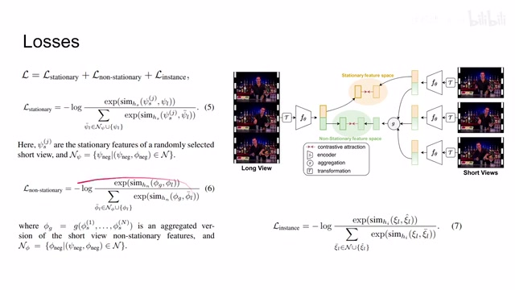
00:04:44–00:04:45 · 画面 02100:04:45–00:05:08 · 画面 022
00:04:45–00:05:08 · 画面 02200:05:08–00:05:11 · 画面 023
00:05:08–00:05:11 · 画面 023基础的 InfoNCE Contrastive loss 这样一个构型所以你看本文的核心思路真的不复杂
00:05:11–00:05:16 · 画面 024
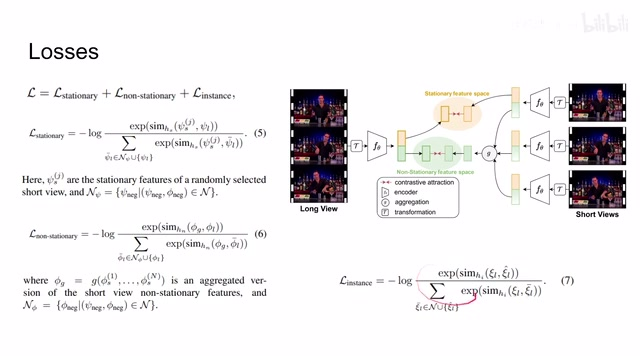
00:05:11–00:05:16 · 画面 02400:05:16–00:05:17 · 画面 025
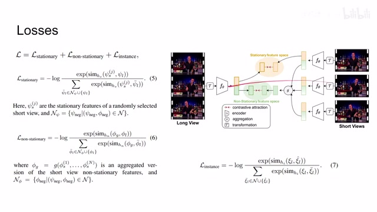
00:05:16–00:05:17 · 画面 025一个 stationary loss 一个 non-stationary loss 然后 instance loss 它们三个合一起来每一个都是一个单独的 InfoNCE 就是一个非常简单的处理最后来看作者汇报了一些结果 video classification 我做了一些 ablation 作者还汇报了一些 video retrieval 的这些事情包括关于这些 non-stationary feature 和 stationary feature 它们之间的一些分析欢迎各位到原文中查看
00:05:17–00:05:21 · 画面 026
00:05:17–00:05:21 · 画面 02600:05:21–00:05:27 · 画面 027
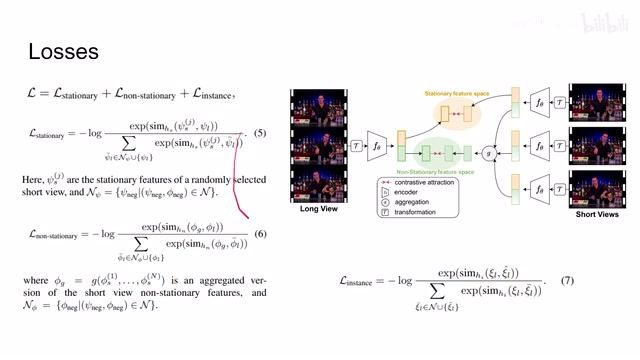
00:05:21–00:05:27 · 画面 02700:05:27–00:06:07 · 画面 028
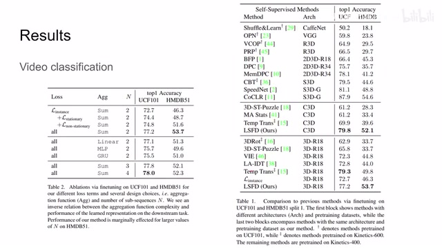
00:05:27–00:06:07 · 画面 028那么总的来说这篇文章呢它其实最大的意义在于说我们探讨了整个一个视频和这个视频里面每一个小片段的关系我们能不能利用这种整体和局部的关系对我们的这个后白的这个 self-supervised learning 对 contrastive learning 做出一点帮助呢沿着这个方向做下去呢应该也是一个挺有意思的事情好的那么以上就是我对这个论文的简单的一个介绍那么感谢您的收看再见
00:06:07–00:06:08 · 画面 029
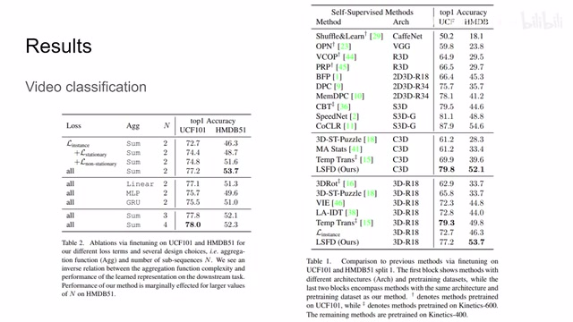
00:06:07–00:06:08 · 画面 029转写与来源说明 · 0 个自动复核提示
保留 15 个原始语音片段，0 个片段触发自动复核提示。提示仅用于定位可能的术语、重复或识别问题，不等于已确认错误。
讲解画面为源视频截图（640×360），不是可编辑 PPT 文件。全片按每秒 2 帧扫描内容变化，逐步展开页保留；连续动画保留代表画面。清晰度受源视频限制。
原视频：paper/合集_2026-10-16_表征学习/[论文速览]Long Short View Feature Decomposition via Contrastive Video...[2109.11593].mp4
SHA-256：e007769c1dad25f0d8be86c5729460b012abe41104a7301de210bc8510d014ed
全文按视频语音与画面制作。原论文可从上方链接下载；完整资料包保留全文、原始逐字稿、字幕和校对记录。